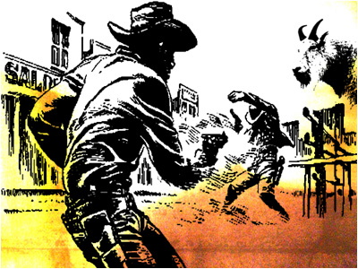
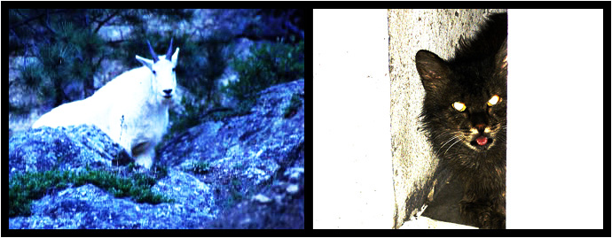
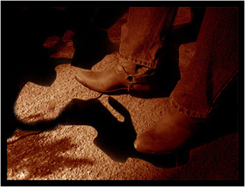
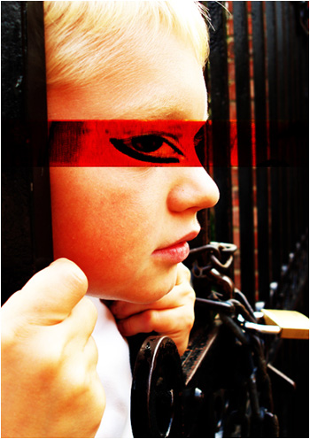

| |
 |
 |
| |
 |
Ден 4 |
|
| |
|
|
Ален Корбин, детектив:
Јарците што публиката ги сретнува на четвртиот ден се видно истоштени, а можеби и физички малтретирани. Нивното крзно е валкано жолтеникаво, не снежно бело како обично, а од нивните очи како да течат и солзи од крв. Кловнот тврди дека изгледот на јарците бил дел од настапот, „За поголем шок“, но Децата од Гума делуваат поотворено, „Па така и им треба, нели, цело време оговараат. Каде ќе одиме ако не можеме да си ги зачепиме муцките? Кај Камшикарот и неговото минијатурно, грисинчесто, стапче?“ Во секој случај, говорот на јарците е јасен одраз на нивниот изглед: суров, негативен, и, може да се каже, неприродно изопачен, без некоја значајна поука или мудрост. За нештата да станат потмурни, гледач од публиката се наметнува врз јарците сред настап, а приказната-одговор со која тие го дочекуваат во голема мера ја разбива илузијата дека се марионети со човечки глас зад нив. Од друга страна, Каубоецот конечно истапува како значаен актер во замрсената приказна на јарците и тоа со стил, а тука дознаваме и за подлабока врска меѓу Самовилата и Гатачката...
КЛОВНОТ: Дами и господа, ова е моментот што, верувам, повеќето од вас со нетрпение го чекаат. Да не одолговлекуваме многу; ви ги претставувам: Мудрите Јарци! (ракоплескање)
ДЕСНИОТ ЈАРЕЦ: Во цевката на секој пиштол има мали суштества наречени „банг-бангери“. (аплауз) Тие живеат од искрите, од чадот што се создава со секој истрел... Се нафрлаат на ѕидовите и гризат, голтаат остатоци од куршумите, парчиња ’рѓа и нешто злоба. Некогаш се случува банг-бангерите да се размножат толку многу, што преку цевката да стигнат до чкрапалото на пиштолот. Едноставно се нафрлаат на тоа мало чеканче и го тресат, го лижат, го цицаат, го корнат... Нормално, од толку тресење, пиштолот почнува да пука сам.
ЛЕВИОТ ЈАРЕЦ: Се случи еднаш во Копенхаген, Каубоецот да предизвика еден Швеѓанец на дуел. (аплауз и смеа) „Слушај, ти,“ му рече, „Мислам дека си фер и праведен, некогаш повеќе фер отколку праведен, некогаш повеќе праведен отколку фер, ама ти си Швеѓанец и тука не можам ништо да направам. Ајде излези сега од салун-центаров за убавина и да се разјасниме ко вистински мажи... (Еј, Ханеке, ќе се вратам јас, држи ми го восокот топол)“ (смеа)
Д.Ј.: Како што се туркаа низ насобраната толпа, револверот на Каубоецот испали сам во земја, а Швеѓанецот потскокна во страв (на него и претходно му сјаеше море пот на чело) и веднаш се фати за пукалото... Пукања, викотници, плач, крв, скршени стаклени излози...
|
|  |
Л.Ј.: ...распарчани МекДоналдс кукли, разлетани каталози, излижани ДВД-а, боси сандали, стопени сладоледи...
Д.Ј.: ...уште по некое цмиздрење, уште по некој пукот, големо големо ехо, и 18 тела налегнати на земја во сочни локви, седум од кои мртви, едно од кои Швеѓанецот.
Л.Ј.: Со студен поглед преку очи и блага насмевка на усни, Каубоецот со леснотија го заврти револверот на прст, ја принесе цевката до усни, дувна и потоа го врати чудото назад во футрола. „Ќе видиш ти убаво, ќофте шведско, мислиш ќе почнеш прв, да ме фатиш на неспремно. Брус Ли не ме фаќа така, не па ти; ене со Мечкана пробај ако сакаш... во некој друг живот, то ест.“ (се слуша: Еј, пази, не се буткај...)
Д.Ј.: Една постара изјава на Каубоецот кажува се: „Спектаклот е капитал во таков степен на акумулација во кој што тој станува слика. Зошто инаку би ме сметале за подвижен спектакл од тука до Атлантида?“
Л.Ј.: Каубоецот Е опасен, ама постојат и други лефтерни појави, многу пострашни од него. Кафка напишал: „Сега Сирените имаат уште посмртоносно оружје од нивната песна, имено нивната тишина... Некој можеби и има избегано од нивното пеење, но од нивната тишина, сигурно никогаш...“ (тивок аплауз, пак се слуша: Не се буткај, бе дебел... Види го, сељак!) Затоа се тивки устите што никогаш не ги приметуваме. Во налет на длабока подмолност, вметнуваат бела ракавица во нашите животи и го крадат сето она што тие некогаш би можеле да претставуваат за нас, ги бришат нашите можни сеќавања од самите нив. (се слуша: Абе само, малку, сакам да ги прашам нешто, најискрено...)
Д.Ј.: И сигурно пукаат со прсти по лејката на некој мрсен саксофон, си велат дека така е најдобро за сите, дека светот ќе ни изгледа посветло без нив... но, се прашувам дали е тоа така... Постојат пар ритуали што доаѓаат од племето Балу во центарот на Јужна Америка со чија помош човек може да лоцира некој особено непријатен спомен и да го избрише. (се слуша: Еве сега ќе се тргнам, само да си ја доврши мислата...) Ритуалите се навистина одвратни и колку помалку се знае за нив, толку полесно се спие. За некој да посака да помине низ таков кошмар мора нешто навистина лошо да му се има случено. Но кон која цел? Луѓето што намерно забораваат, најчесто ја повторуваат истата грешка одново, дали направо или во некоја слична форма, не е битно – големата лекција што можеле да ја извлечат од својата грешка останува само нема дијадема за век и векови...
ГЛЕДАЧ: (гласно, но помалку нејасно) ЕЈ, ЈАРЦИ! (се слуша галама) Еј, Мудри Јарци!
КЛОВНОТ: (тивко, брзо и неразбирливо, како предупредување до другите циркузанти) Пшшшшт...
ГЛЕДАЧ: Ееј, може да кажам нешто? (се слуша галама во публиката: Што ку* му е на овој? Седи бе, дебељуцко!) Дајте да кажам нешто! Ве молам да кажам нешто...
Л.Ј.: Не знам, можеш ли? (смеење во публиката, се слуша: Не ми се верува! Сега и муабет ќе прави...) Имаш уста, зошто да не...
ГЛЕДАЧ: (задишано) Фала ви многу, стварно, фала ви... Ах... Туку, ова ми е трет пат во циркусов неделава, ах... Едино вчера не можев да дојдам зашто заглавив на работа во интернет кафе... Ко психијатар да изигравам кога ќе се исфрлат мањацине... Ах, него, што ми беше зборот... Во понеделник кажавте ќе ни кажете мистерија и почнавте све по ред, за Самовилата, за Кловнот, за тој Стогорог или Слонорог, не ми текнува...
Д.Ј.: Снегорог? (смеа во публиката)
ГЛЕДАЧ: ...Чекај да довршам, ах... Значи... Сето тоа ми делува многу, многу, како да кажам, злобно, такви луѓе да се нафрлат на таа кутра Самовила, и сите така да продолжат ко ништо да се нема десено... Ах... Ама не довршивте да ни кажете што и како било, а толку сакам да дознаам све од ред.... И после дојдов само за вас, само за вас, пошто циркуси и не сакам, а овој е сра*е, па да ни кажете, да ни плеснете у фаца, кој бил, како бил и зошто бил... Више преку глава ми е све да ми почињаат луѓе и ништо да не довршуваат штом се појават у јавност, па еве сега кога барем плаќам за тоа да ми каже некој така и така било, мирно да заспијам, затоа што кривецот бил фатен и полово скратен... Ах...
Л.Ј.: Ако сакаш да бегаш, не бегај лево, не бегај десно, ниту напред; те чекаат со солна киселина скриена во лале...
ГЛЕДАЧ: ...Што? Нема везе, не-ме-прекинувај! Туку, ах, вториот ден за све зборите освен за тоа што се десило со Самовилата... Мислам ЗА СВЕ... Ајде више, преку такво ми е, сакам да знам што се случило со неа и доста досаѓање пошто нема да дојдам четврти пат... Мечката да не ја изело-0-о... (се слуша гужвање во публиката и аплауз, белешка од Ален Корбин: во оваа точка Џуџето од лево и Децата од Гума од десно го фаќаат гледачот за врат и го носат надвор од шаторот по што, според сите наоди, го однеле во кафезот на Мечката)
Л.Ј.: Ја виде жичката во неговите очи? (далечна галама) Тоа е убава жичка, ретко кој ја има. Се сеќаваш на последниот официјален одмор на Допелгангер? Штета што го исфрлија гледачот, мислам ќе сакаше да го слушне ова... Самовилата знаеше да трепне одвреме-навреме: „Најубавото нешто што можеме да го искусиме е мистериозното: наша најзначајна работа е секогаш и на секое место да ја продлабочиме мистеријата што сме ја затекнале или што, можеби по некоја случајност, не затекнала нас...“
Д.Ј.: „...А, добрата претстава потсетува на мистерија без која светот не би можел да постои.“ Секако дека се сеќавам на одморот, но пред да преминеме на него... Дами и господа, чујте и почујте: Самовилата никогаш не зборува – кога сака да каже нешто, таа само испрчува усни, трепка нежно и луѓе ја разбираат. Малкумина знаат зошто е тоа така, па гумените јазици измислуваат приказни кога и каде ќе стигнат: ако прозборела глави ќе експлодирале, чиреви ќе испопукале, цели зимзелени шуми ќе избледеле и што ти уште не. Бела Лугоши и Брижит Бардо би се фатиле рака под рака и би им се родил Борис Јелцин. (непријатна смеа)
Л.Ј.: Вистината е дека секогаш кога Самовилата ќе се обиде да изусти збор пред било кого, па дури и пред нас, на неа и требаат неколку часа, па и денови за да се опорави од шокот. Имено, нејзиниот глас е толку прекрасен, што го разоружува секој што ќе ја чуе, го отвара и го прочистува од секоја валканост, сиот катран што го обиколува човечкото (или јарешкото) срце. Секако, сето тоа е фантастично, но, за жал, тука има и еден мал проблем. За некој да се прочисти, на виделина прво треба да излезе неговото вистинско лице! Да... Замислете си дека шепкате „Те сакам“ во увото на најпрекрасната личност што некогаш сте ја запознале и наеднаш од неа ги извлекувате на виделина сите оние моменти на вечерна сексуална параноја, малтретирани гнојарици и самонанесени лузни, илеџења на работа, нефер тепачки во основно, сите грди прегрди желби/соништа што таа личност ни сама на себе нема храброст да си ги признае... Едно е тоа што ниеден ваш соговорник тоа не би го сакал, особено ако тегне по вашата грижа и љубов, туку сигурно ни вие не би го сакале тоа. Дури и за Самовила што може да лета таква моќ е премногу...
Д.Ј.: Ах... Но, да се вратиме на нашиот последен одмор. Повеќето циркузанти ќе кренат прашални веѓи, „Одмор? Кловнот попрво би се напил змиски отров отколку да даде одмор!“ Не ги слушајте, сеќавањето ги издава. Кловнот дава одмор на секои 30 кучешки години и тоа е правило од кога има дојдено на чело на циркусов. Зошто баш во тој интервал? Убеден е дека тоа е идеалното време – 30 човечки години се еден животен циклус по кој следи прочистување (верување тесно поврзаното и со Сатурновата година), а бидејќи сите живееме кучешки живот, логично е дека интервалот од човечки 4 години и горе-доле 3 месеци исто така мора да е добар интервал за барем половично прочистување... Значи, нашиот последен одмор беше пред 28 кучешки години...
Л.Ј.: Тоа беше некое место сред Италија... или можеби на југот на Франција... Ете и мене почнува да ме издава сеќавањето... Во секој случај, малечко гратче, со воздух на шпагети вестерн. Цел циркус беше распослан крај брегот некои три-четири недели, се шетавме меѓу мештаните, ги иритиравме верските групи, се сончавме во пустелијата, гледавме хорор филмови на платно (топло го препорачувам „Фрикови“ на Тод Браунинг), мераци... Самовилата и Топовското Бркле беа се уште меѓу нас, а Џуџето се држеше под каква-таква контрола (иако уште тогаш ги тепаше Децата од Гума). Се смеевме како луди. Меѓу другите епизоди, еден ден во циркусот дојде наставник по ликовна уметност на кој Самовилата му пријде и му трепна прашално, „Ми делуваш прекрасно, така валкано шарен. Што работиш?“ Наставникот се насмеа и и објасни дека тој работи по средни школи и други институции, дека ги учи луѓето како да цртаат. Таа зјапна во него и ко да не и се верува што слуша, трепна, „Ги учиш како да цртаат? Сакаш да кажеш дека забораваат?!“ (смеа)
Д.Ј.: Но, Самовилата не беше постојано така весела... Го насетуваше доаѓањето на Каубоецот и неговиот спектакл во тие краишта... Една вечер не изнесе нас надвор од гратчето, така што не мушна низ дупка во бодликавата ограда на кампот додека Кловнот ги врзуваше Децата од Гума во чвор (тие се кезеа инаку; за награда требаше да добијат гумени алки со напис против расизам).
Л.Ј.: Интересно беше да се гужва човек по тие грмушки и завиени шумски патеки додека сонцето заоѓаше низ густите крошни. Додека се гаѓавме со шишарки и бадеми, помислив за прв пат во живот дека, еј, па можеби и би преживеале сами во дивина. Јарци сме на крај на краишта – нашите предци никогаш не спиеле меѓу четири ѕида. Но, тоа само затоа што Самовилата чекореше сигурно пред нас. Сонцето и е татко, знаете. Додека тоа свети не можат да се изгубат ниту таа ниту оние што ја следат.
|
|  |
Д.Ј.: Таа објаснуваше со поглед дека постојат места надвор од време-просторот каде човек може да се превитка во себе и да се разложи на низа честички среќа што потоа би се распрснале ширум светот и би станале дел од оние луѓе што се обично прави баксузи. На тие места може да се пристигне во било кое време и низ било која точка од атласот, ако се знае како да се стигне таму. Таа никогаш не кажа зошто некој би сакал да се превитка во себе, но можев да замислам. Сега одевме на едно такво место и да бидам искрен, ми делуваше дека правиме грешка во чекори.
Л.Ј.: Конечно, при самрак стигнавме на нашето одредиште. Таа трепна и ние знаевме: тоа беше зградата на стариот универзитет за кој збореа мештаните, или ако ништо друго, барем кровот од зградата што сега се наоѓаше во тиквата на еден безличен рид. Насекаде околу нас беа распослани квадратести плочи, како голем мозаик по чии рабови се гледаа далечна слика од гратчето на југ, мртва библиотека на север, и борова шума во просторот измеѓу.
Д.Ј.: Како што во далечина улиците и копаничарите си туркаа со секојдневните обврски, лижејќи моторни коли и прскајќи овоштарници, тука духовите на минатото се шеткаа мирно и локаа од вечното знаење на шумата. Таму во градот блескаа улични лампи, но не можеше да се види ништо освен темница, а тука голо око не можеше да разликува камче и вепар, па сепак се гледаше се со полна јаснотија. Ме фати трпка по цело тело ко некој да се спремаше да се фрли на нас.
Л.Ј.: Самовилата не поведе наоколу со јасна трага на милост по нејзините усни. Плочите се клатеа под нас и се сопнав два пати. Над нас прелета був или некое слично ноќно летало, можеби вампир или гигантски скакулец. Застанавме на три метри од библиотеката, пред нас фалеа две плочи и на нивните места се наоѓаше дупка гладна ко ламја. Во дупката се гледаше уште едно ниво, паралелно со нашето и само триесетина сантиметри подолу. Така, рековме истовремено, плочите се само украс, фасада за Морлоците што живеат и трчкаат директно под нас. Се слушна шиштење...
Д.Ј.: Тогаш во дупката светнаа два пара зелени очи, сите четири извиени во злобен лак. Верував дека Самовилата знае што прави, но можеби, чисто можеби...
Л.Ј.: Шиштењето засили и наеднаш очите скокнаа во нас...
Д.Ј.: Инстинктивно ги испрчивме роговите напред...
Л.Ј.: ...и тогаш, Самовилата писна „НЕ!“ и за миг се вкочанивме сите – дури и очите.
Д.Ј.: „Тоа се само мачиња,“ трепна таа поцрвената од страв. „Мали мачиња оставени сами на себе, да се кријат сред оваа шума. Дојдов да си ги земам дома пред да ги изеде некој гавран... или некој јарец.“ Се обиде да се насмее, но тоа беше лажна насмевка, можеби единствена таква што некогаш заиграла по нејзините усни. Имаше видено нешто страшно во нас.
Л.Ј.: И погледнавме кон очите. Се слушна едно нежно, „Мјау!“
Д.Ј.: Ноќта се затвараше над нас и моравме да одиме, само немав сфатено добро – каква врска имаше стариот универзитет со мистериозните места за кои Самовилата зборуваше претходно. „Ќе ти објаснам друг пат,“ трепна, се уште црвена во лицето. „Да, друг пат...“
Л.Ј.: Следниот ден, таа и ги поклони мачињата на Гатачката и и прикажа нешто друго што очигледно ја возбуди старицата. Тие погледнуваа кон нас одвреме-навреме; Деца од Гума да бевме, ќе знаевме дека нешто не е во ред.
Д.Ј.: Истото попладне, Каубоецот влезе во градот со кампањата, „И новиот револт се претвара во чист конформизам“. Светнат на неговиот коњ, тој поведе неколку булдожери кон шумата, каде според сите нацрти требаше да се крене најголемиот Луна Парк во Европа. Истовремено, Брус Ли отвараше ланец кинески ресторани по целиот брег.
|
|  |
Л.Ј.: Самовилата не реагираше воопшто, речиси како никогаш да не слушнала за Каубоецот или неговите интереси. Место натажено да ја ведне главата како што би се очекувало од неа, таа само леткаше од место до место, плескајќи со рацете во наша насока. Никогаш веќе не ги спомна местата ниту пак што точно видела во нас таа вечер...
Д.Ј.: Ах... Но, тоа не е крајот... Вчера, пред Децата од Гума и нивниот Батка да ни покажат дека некои лекции навистина вредат, Кловнот не покани во неговиот шатор да ни каже два вица – еден за слепиот парамециум што отишол во Ибица и друг за дебелиот албатрос што се успал во сателитска антена. Меѓу двата вица, тој се извини и отиде до тоалет, оставајќи не да го разгледуваме неговиот ѕид полн со слики од историјата на Допелгангер (каде може да се најде вистинско богатство од прастари циркуски фотографии, меѓу другото и од првата Допелгангер постава на Прлигор Вилег). Мислевме дека го знаеме тој кадифен ѕид на памет, затоа што Кловнот често не викаше на по два вица со тоалет пауза меѓу вицовите, но тогаш видовме нешто ново: една стара и прилично чудна фотографија што до тогаш сигурно не била таму. Додека ја гледав, вриев и се обидував да се присетам... Кога?...
Л.Ј.: На фотографијата нацерени како римски богови стоеја еден до друг, од лево кон десно, Кловнот, Самовилата и Каубоецот. Зад нив, гордо се протегаше Допелгангер и тоа токму по мозаик-кровот на некогашниот универзитет што го посетивме тоа лето пред 4 и кусур години. На самиот раб од рамката, се наоѓавме и ние...
Д.Ј.: Не е можно тоа да е фотографија... Мора да е монтажа... Таа сцена никогаш се нема случено...
Л.Ј.: Ја загледав, ги барав сечените рабови, сенките и тоновите што не се поклопуваат, несоодветните текстури, анахронизмите, сток фотките, отсутните лични белези, се што можеше да ми текне што би потврдило дека тоа не е вистинска фотографија. Ништо не најдов. Само три насмеани лица, циркус и два изгубени јарци...
Д.Ј.: Тогаш Кловнот се појави... Рече, „Ги видов Децата од Гума со еден Батка пред приколка. Се надевам се немате с’рчкано... Тоа би било глупо од ваша страна...“
|
|  |
| |
|
|